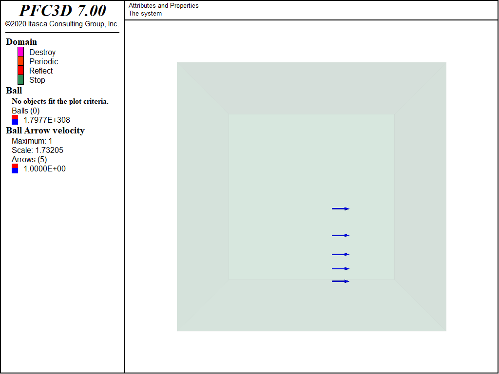
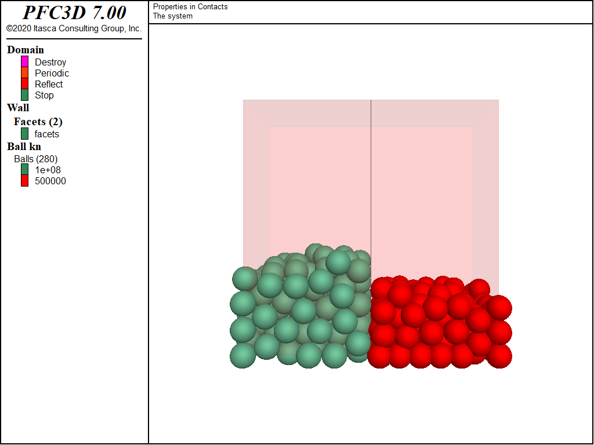

属性与性质
引言
注意
本算例的项目文件可在 PFC 中查看或运行。[1]所用的数据文件（data files）列于本算例末尾。
属性与 性质之间的区别，是命令处理与绘图中的关键所在。
- 属性是模型组成部分的固有特征，例如位置、速度、尺寸等。属性列表是不可更改的。体（球颗粒、刚性簇和墙体）、部件（球颗粒、子颗粒和面片）以及接触都具有属性。可修改属性的列表请参阅
ball attribute、clump attribute和wall attribute文档。在 PFC 中也可以使用 球体列表属性（ball list attribute）、刚性簇列表属性（clump list attribute） 和 墙体列表属性（wall list attribute） 命令列出属性。 - 性质仅适用于部件，并且是由用户指定的字符串/值对列表。默认情况下，部件不具有任何性质。这些字符串/值对用于表示部件的表面条件，接触模型可利用它们来确定部件之间如何相互作用。
性质赋值错误
正确地为属性和性质赋值非常重要。以下
示例说明了一个常见的误区：使用 ball attribute 命令为一选定范围内的球颗粒赋予 x 方向上的非零速度，
同时通过 ball property 命令为其余球颗粒赋予名为 velocity-x、值为 1.0 的
新性质。由于 velocity-x 可能对应 ball attribute 命令的某个关键字，
因此会出现警告。
; 文件名：attributes_and_properties.dat（3D）
;
; 演示球属性（attribute）与球参数（property）的区别
;==============================================================================
model new
model large-strain on
model title 'Attributes and Properties'
; 生成松散的球体集合
model domain extent -10.0 10.0
model random 10001
ball generate number 10 radius 0.5 box -0.5 0.5 -0.5 0.5 -9.0 9.0
; 为部分球设置非零的 x 方向速度
ball attribute velocity-x 1.0 range position-z -10.0 0.0
; 为其余球创建名为 'xvelocity' 的参数
ball property 'velocity-x' 1.0 range position-z 0.0 10.0
; 设置密度并循环——注意只有部分球实际发生移动
ball attribute density 1.0
model mechanical timestep fix 1e-2
model solve time 2
program return
;==============================================================================
; 文件结束：attributes_and_properties.dat（3D）
在一列中生成 10 个球颗粒。顶部 5 个球颗粒被赋予 velocity-x 性质，而底部 5 个球颗粒的速度属性被修改。设置固定时步，并对模型求解指定的时间区间。图 1（Figure 1） 给出了系统在绘制球颗粒与球颗粒速度箭头后的最终状态（绘图细节参见 球颗粒绘图项（Ball Plot Item））。球颗粒按其 velocity-x 性质着色。底部 5 个球颗粒因不具有 velocity-x 性质而未被渲染。另一方面，顶部 5 个球颗粒因未赋予速度而不显示箭头。因此，一旦开始循环，被赋予性质的那些球颗粒不会移动。


图 1：系统的最终状态。
面向接触继承的性质赋值
下例说明了性质概念的预期用途，即用于接触模型的 性质赋值。
; 文件名：properties_in_contacts.dat
;
; 演示如何用球的参数设置接触模型参数
;=============================================================================
model new
model large-strain on
model title 'Properties in Contacts'
; 创建计算域
model domain extent -10.0 10.0 -5.0 5.0 -10.0 10.0 condition reflect
; 使用线性接触模型
contact cmat default model linear
; 生成集合体
model random 10001
ball generate number 140 radius 1.0 box -10 0 -5 5 -10 10 tries 300000
ball generate number 140 radius 1.0 box 0 10 -5 5 -10 10 tries 300000
; 赋予密度与局部阻尼
ball attribute density 1000 damp 0.7
;设置重力
model gravity 10
; 为球赋予参数以供线性接触模型使用
ball property 'kn' 1e8 range position-x -10 0
ball property 'kn' 5e5 range position-x 0 10
ball property 'fric' 0.7
; 在两侧之间设置隔板
wall generate plane dip 90 dip-direction 90
wall property 'kn' 1e7
; 使其下落
model solve time 10
program return
;=============================================================================
; 文件结束：properties_in_contacts.dat
在这种情况下，在隔墙两侧生成数量相等的球颗粒。将
线性接触模型（linear contact model）
设为所有接触类型的默认接触模型（参见 contact cmat default
命令），但未在 接触模型分配表（CMAT） 中指定任何性质。取而代之的是，使用
ball property 命令为隔墙两侧的球颗粒赋予表面性质 kn。请注意，左侧球颗粒的 kn 值比右侧球颗粒高 200 倍。
线性接触模型支持 继承（inheritance），即接触模型的性质由部件性质确定。线性接触模型的 文档（documentation） 讨论了
该接触模型继承的细节。正如最终形态所表明的，由于球颗粒之间的相互作用
刚度较低，右侧在重力作用下产生了明显更大的压密。


图 2：接触模型性质由球颗粒性质确定时的系统。
讨论
本教程演示了属性与性质之间的差异。这些差异 是 PFC 中命令处理与绘图的关键所在。
数据文件
attributes_and_properties.dat（三维）
1 2 3 4 5 6 7 8 9 10 11 12 13 14 15 16 17 18 19 20 21 22 23 24 25 26 27 | ; 文件名：attributes_and_properties.dat（3D）
;
; 演示球属性（attribute）与球参数（property）的区别
;==============================================================================
model new
model large-strain on
model title 'Attributes and Properties'
; 生成松散的球体集合
model domain extent -10.0 10.0
model random 10001
ball generate number 10 radius 0.5 box -0.5 0.5 -0.5 0.5 -9.0 9.0
; 为部分球设置非零的 x 方向速度
ball attribute velocity-x 1.0 range position-z -10.0 0.0
; 为其余球创建名为 'xvelocity' 的参数
ball property 'velocity-x' 1.0 range position-z 0.0 10.0
; 设置密度并循环——注意只有部分球实际发生移动
ball attribute density 1.0
model mechanical timestep fix 1e-2
model solve time 2
program return
;==============================================================================
; 文件结束：attributes_and_properties.dat（3D）
|
properties_in_contacts.dat（三维）
1 2 3 4 5 6 7 8 9 10 11 12 13 14 15 16 17 18 19 20 21 22 23 24 25 26 27 28 29 30 31 32 33 34 35 36 37 38 39 40 | ; 文件名：properties_in_contacts.dat
;
; 演示如何用球的参数设置接触模型参数
;=============================================================================
model new
model large-strain on
model title 'Properties in Contacts'
; 创建计算域
model domain extent -10.0 10.0 -5.0 5.0 -10.0 10.0 condition reflect
; 使用线性接触模型
contact cmat default model linear
; 生成集合体
model random 10001
ball generate number 140 radius 1.0 box -10 0 -5 5 -10 10 tries 300000
ball generate number 140 radius 1.0 box 0 10 -5 5 -10 10 tries 300000
; 赋予密度与局部阻尼
ball attribute density 1000 damp 0.7
;设置重力
model gravity 10
; 为球赋予参数以供线性接触模型使用
ball property 'kn' 1e8 range position-x -10 0
ball property 'kn' 5e5 range position-x 0 10
ball property 'fric' 0.7
; 在两侧之间设置隔板
wall generate plane dip 90 dip-direction 90
wall property 'kn' 1e7
; 使其下落
model solve time 10
program return
;=============================================================================
; 文件结束：properties_in_contacts.dat
|
attributes_and_properties.dat（二维）
1 2 3 4 5 6 7 8 9 10 11 12 13 14 15 16 17 18 19 20 21 22 23 24 25 26 27 | ; 文件名：attributes_and_properties.dat（2D）
;
; 演示球属性（attribute）与球参数（property）的区别
;==============================================================================
model new
model large-strain on
model title 'Attributes and Properties'
; 生成松散的球体集合
model domain extent -10.0 10.0
model random 10001
ball generate id 1 10 box -1.0 1.0 -10.0 10.0
; 为部分球设置非零的 velocity-x 速度
ball attribute velocity-x 1.0 range position-y -10.0 0.0
; 为其余球创建名为 'xvelocity' 的参数
ball property 'xvelocity' 1.0 range position-y 0.0 10.0
; 设置密度并循环——注意只有部分球实际发生移动
ball attribute density 1.0
model mechanical timestep fix 1e-5
model cycle 10
program return
;==============================================================================
; 文件结束：attributes_and_properties.dat（2D）
|
尾注
| [1] | 要在 PFC 中查看本项目，请使用程序菜单。
⮡ PFC |
| 这些内容对您有帮助吗？… 版权与免责声明 | FLAC3D © 2019, Itasca | 原文更新于 2020 年 10 月 8 日 |